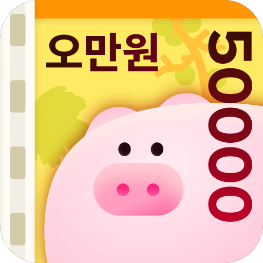

돈이돼지 Android 앱
Google Play 기준 Android 누적 다운로드 100만을 기록한 돈이돼지 앱의 Android 개발·운영을 단독으로 담당하고, 같은 코드베이스에서 일본 서비스 ‘부타마루’를 출시했습니다. 광고와 보상 지급, 센서 기반 만보기, 보상 애니메이션부터 QA 배포와 릴리스까지 Android 제품 전반을 맡았습니다.
- 일일 광고 노출 횟수와 가입 시점에 따라 전면·보상형 광고 슬롯을 선택해 사전 로드했습니다. 로드·표시 실패에는 재시도와 안내를 적용하고, 보상형 광고에서는 보상 획득 콜백을 확인한 뒤에만 지급 흐름을 진행했습니다.
- 보상 중복 요청과 뒤늦게 도착한 조회 응답으로 상태가 어긋나지 않도록 요청 진행 상태·세대 번호·지급 완료 ID를 관리했습니다. 지급 응답 유실 가능성이 있는 오류에는 보상 상태를 다시 조회하도록 처리했습니다.
- 걸음 수 센서를 포그라운드 서비스에서 처리하고 StateFlow로 화면에 전달했습니다. 재부팅으로 센서 누적값이 초기화되거나 날짜가 바뀔 때 기준값과 보정값을 갱신해 당일 걸음 수를 이어갑니다.
- 한국·일본의 화면·API·알림 흐름을 지역별로 구성하고, Canvas 기반 커스텀 View로 보상 애니메이션을 구현했습니다.
- 한국·독일·미국·일본의 오퍼월·기프트카드 제공사와 협업해 리워드 적립·교환 기능을 개발하고, 매출의 30% 이상을 차지하는 매출처를 확보했습니다.
- 여러 매출처의 데이터를 모아 종합 리포트 생성을 자동화했습니다. 이 리포트를 팀의 핵심 지표로 활용해 기획 정책의 방향을 결정하고 리워드 지급량을 조절하고 있습니다.
- 리워드 앱의 보상 확률을 설계·운영해 한정된 리워드 환경에서도 사용자 친화적인 보상 경험을 제공했습니다.
- 앱 위협과 어뷰저의 이상 행위를 탐지·분석하고, 중복 회원가입 방지 및 부정 사용자 탐지 로직을 설계·적용했습니다.